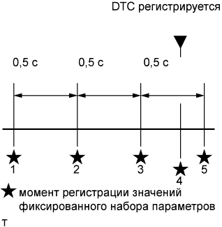
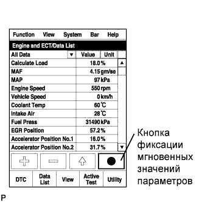

DTC P1604 Нарушение запуска |
| Режим поездки при обнаружении DTC | Условие обнаружения DTC | Неисправный участок |
| После запуска двигателя |
|
|
| После запуска двигателя (достижения частоты вращения коленчатого вала не менее 500 об/мин) частота вращения коленчатого вала в течение 2 с падает до 200 об/мин или ниже (логика диагностирования за 1 поездку). |
| № DTC | Параметры из Data List |
| P1604 |
|
|  |
| Чтобы двигатель мог быть запущен, система запуска, система свечей накаливания, топливная система и устройства, обеспечивающие компрессию, должны функционировать правильно. |
| Круг причин неисправности можно сузить, убедившись в том, что коленчатый вал двигателя прокручивается стартером нормально. |
| Система запуска (если коленчатый вал двигателя прокручивается стартером ненормально) |
Двигатель не запустится, если стартер не обеспечивает достаточную частоту прокручивания коленчатого вала. Ниже перечислены возможные причины недостаточной частоты прокручивания коленчатого вала.
Неисправность в системе посадки и запуска (коленчатый вал двигателя не прокручивается).
Неисправность в системе иммобилайзера (коленчатый вал двигателя не прокручивается).
Ненормальная работа аккумуляторной батареи (частота прокручивания коленчатого вала низка).
Неисправность стартера (частота прокручивания коленчатого вала низка).
| Система свечей накаливания (если коленчатый вал двигателя прокручивается стартером нормально) |
Когда в системе свечей накаливания имеется неисправность, температура воздуха на впуске не возрастает надлежащим образом, и температура воспламенения топлива не достигается. Соответственно, первоначальное сгорание отсутствует, либо для запуска двигателя требуется время. Ниже перечислены возможные причины этой ситуации.
Неисправность датчика температуры охлаждающей жидкости двигателя.
Неисправность свечи накаливания.
Неисправность реле включения свечей накаливания.
| Топливная система (если коленчатый вал двигателя прокручивается стартером нормально) |
Если топливо не подается, запуск двигателя невозможен. Чтобы двигатель запустился, давление в топливной системе должно быть не ниже 25000 кПа. Ниже перечислены возможные причины недостаточного давления в топливной системе.
Засорение топливопровода.
Нехватка топлива.
Замерзание топлива.
Низкое качество топлива.
Попадание воздуха в топливопровод.
Засорение фильтрующего элемента топливного фильтра в сборе.
Неисправность нагнетающего топливного насоса в сборе.
Неисправность в топливной системе Common Rail в сборе.
Неисправности форсунок в сборе.
| Двигатель в сборе |
Если коленчатый вал двигателя прокручивается нормально, и в системе свечей накаливания и топливной системе нет неисправностей, неисправность может иметь место непосредственно в двигателе.
Чрезмерное трение в двигателе.
Недостаточная компрессия.
| 1.СЧИТАЙТЕ КОДЫ DTC (ЗАПИШИТЕ СОХРАНЕННЫЕ КОДЫ DTC И ДАННЫЕ ФИКСИРОВАННОГО НАБОРА ПАРАМЕТРОВ) (ПРОЦЕДУРА 1) |
Подсоедините портативный диагностический прибор к DLC3.
Включите зажигание (IG) и портативный диагностический прибор.
Войдите в следующие меню: Powertrain / Engine and ECT / DTC.
Запишите сохраненные коды DTC и данные фиксированного набора параметров.
| ДАЛЕЕ | |
| 2.ПРОВЕРЬТЕ, ВЫВОДЯТСЯ ЛИ ДРУГИЕ DTC (ПОМИМО DTC P1604) |
Подсоедините портативный диагностический прибор к DLC3.
Включите зажигание (IG) и портативный диагностический прибор.
Войдите в следующие меню: Powertrain / Engine and ECT / DTC.
Считайте коды DTC.
| Результат | Следующий шаг |
| Выводится только код P1604 | А |
| Помимо кода P1604 выводятся другие DTC | B |
|
| ||||
| А | |
| 3.ЗАФИКСИРУЙТЕ МГНОВЕННЫЕ ЗНАЧЕНИЯ ПАРАМЕТРОВ ВО ВРЕМЯ ЗАПУСКА И В РЕЖИМЕ ХОЛОСТОГО ХОДА (ПРОЦЕДУРА 3) |
|  |
Подсоедините портативный диагностический прибор к DLC3.
Включите зажигание (IG) и портативный диагностический прибор.
Войдите в следующие меню: Powertrain / Engine and ECT / Data List / All Data.
С помощью портативного диагностического прибора зафиксируйте мгновенные значения следующих параметров Data List при прохождении последовательности: выключатель зажигания в состоянии ON (ВКЛ) (IG) (5 с) → запуск → холостой ход (10 с).
| ДАЛЕЕ | |
| 4.ОПРЕДЕЛИТЕ ПРИЧИНУ НЕИСПРАВНОСТИ (ПРОВЕРЬТЕ ДАННЫЕ ФИКСИРОВАННОГО НАБОРА ПАРАМЕТРОВ И ЗАФИКСИРОВАННЫЕ МГНОВЕННЫЕ ЗНАЧЕНИЯ) |
Исходя из данных фиксированного набора параметров, сохраненных во время процедуры 1, и значений Data List, сохраненных при запуске двигателя во время процедуры 3, определите причину неисправности.
| Пояснение значений параметров режима Data List | Возможная причина | Нормальное состояние | Замечание по диагностике |
| Значение "Coolant Temp" в данных фиксированного набора параметров меньше 35°C (95°F) | Затруднения при запуске двигателя, имевшие место при непрогретом двигателе | - |
|
| Значение "Coolant Temp" в данных фиксированного набора параметров меньше 35°C (95°F). После прогрева двигателя (когда значение "Coolant Temp" составляет не менее 60°C (140°F)) затруднения при запуске отсутствуют (время прокручивания коленчатого вала двигателя стартером меньше 4 с). | Затруднения при запуске двигателя, имеющие место только при непрогретом двигателе |
| Пояснение значений параметров режима Data List | Возможная причина | Нормальное состояние | Замечание по диагностике |
| Значение "Engine Speed" в данных фиксированного набора параметров меньше 120 об/мин | Затруднения при запуске двигателя могли быть обусловлены чрезмерно низкой частотой вращения коленчатого вала двигателя |
|
|
| Во время прокручивания коленчатого вала двигателя значение "Engine Speed" в списке Data List меньше 120 об/мин |
| Пояснение значений параметров режима Data List | Возможная причина | Нормальное состояние | Замечание по диагностике |
| Значение "Battery Voltage" в данных фиксированного набора параметров меньше 6 В | Затруднения при запуске двигателя могли быть обусловлены полным разрядом аккумуляторной батареи | Во время прокручивания коленчатого вала двигателя: 6 В или выше | Возможно, аккумуляторная батарея полностью разряжена, или ослаблены выводы аккумуляторной батареи. |
| Во время прокручивания коленчатого вала двигателя значение "Battery Voltage" в списке Data List меньше 6 В |
| Пояснение значений параметров режима Data List | Возможная причина | Нормальное состояние | Замечание по диагностике |
| Значение "Fuel Press" в данных фиксированного набора параметров меньше 1000 кПа | Ненормальная подача топлива в нагнетающий топливный насос в сборе (в части системы с низким давлением)
| При стабильных условиях, например, на холостом ходу, давление в топливной системе попадает в интервал +/-5000 кПа относительно заданного значения | Отсоедините впускной шланг от нагнетающего топливного насоса в сборе (в части системы с низким давлением), приведите в действие ручной насос и убедитесь, что топливо подается. |
| Через 2 с после начала прокручивания коленчатого вала двигателя значение "Fuel Press" в списке Data List меньше 1000 кПа | |||
| Значение "Fuel Press" в данных фиксированного набора параметров меньше 25000 кПа | Ненормальная подача топлива в нагнетающий топливный насос в сборе (в части системы с низким давлением) или неисправность в части системы с высоким давлением
| При стабильных условиях, например, на холостом ходу, давление в топливной системе попадает в интервал +/-5000 кПа относительно заданного значения |
|
| После начала прокручивания коленчатого вала двигателя значение "Fuel Press" в списке Data List повышается, по крайней мере, до 25000 кПа, а затем падает ниже 15000 кПа | |||
| Значение "Fuel Press" в данных фиксированного набора параметров или списке Data List изменяется в диапазоне от 40000 до 45000 кПа |
| При стабильных условиях, например, на холостом ходу, давление в топливной системе попадает в интервал +/-5000 кПа относительно заданного значения |
|
| Пояснение значений параметров режима Data List | Возможная причина | Нормальное состояние | Замечание по диагностике |
| Значение "Target Pump SCV Current" в данных фиксированного набора параметров не попадает в диапазон 800-3000 мА или колеблется (изменяясь на 1000 мА или более) |
|
| Из-за нарушения подачи топлива отображается чрезмерно большое число. |
| Во время прокручивания коленчатого вала двигателя значение "Target Pump SCV Current" в списке Data List не попадает в диапазон 800-3000 мА или колеблется (изменяясь на 1000 мА или более) |
| Пояснение значений параметров режима Data List | Возможная причина | Нормальное состояние | Замечание по диагностике |
| Значение "Injection Feedback Val (#1 – #4)" в данных фиксированного набора параметров превышает +3,0 мм3/ход | Неисправность форсунки в сборе или ненормальная компрессия | от -3,0 до 3,0 мм3/ход | Когда какая-либо форсунка в сборе неисправна, холостой ход является неравномерным несмотря на то, что двигатель запускается. |
| В режиме холостого хода значение "Injection Feedback Val (#1 – #4)" в списке Data List превышает +3,0 мм3/ход |
| Пояснение значений параметров режима Data List | Возможная причина | Нормальное состояние | Замечание по диагностике |
| При работе двигателя на холостом ходу после прогрева значение "Injection Volume" в списке Data List не превышает 10 мм3/ход, а значение "Injection Feedback Val (#1 – #4)" равно +3,0 мм3/ход или меньше | Форсунки всех цилиндров в сборе неисправны | - | - |
| Пояснение значений параметров режима Data List | Возможная причина | Нормальное состояние | Замечание по диагностике |
| Значение "Main Injection Period" в данных фиксированного набора параметров или списке Data List равно 0 мкс |
| - | Свидетельствует о прекращении управления впрыском топлива. |
| Пояснение значений параметров режима Data List | Возможная причина | Нормальное состояние | Замечание по диагностике |
| Параметр "Immobiliser Communication" в данных фиксированного набора параметров или списке Data List имеет значение OFF (ВЫКЛ) | Иммобилайзер двигателя | ON (ВКЛ) | Впрыск топлива прекращен из-за нарушения работы системы иммобилайзера двигателя. |
| ДАЛЕЕ | ||
| ||